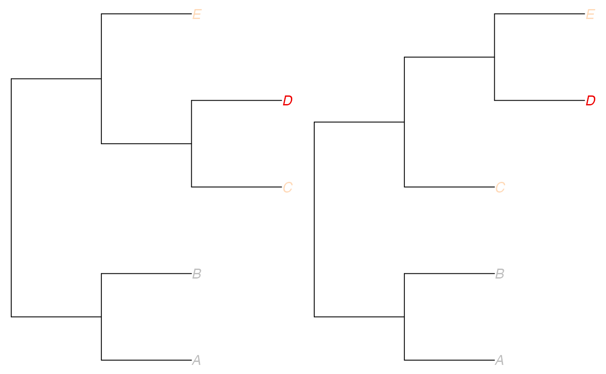

Highlight the topological differences between two trees, plotted side by side.
This function is useful for comparing representative "median" trees - see medTree.
It relies on the function tipDiff.
plotTreeDiff(
tr1,
tr2,
tipDiff = NULL,
vec1 = NULL,
vec2 = NULL,
sizeOfDifferences = FALSE,
tipMatch = TRUE,
treesFacing = FALSE,
baseCol = "grey",
col1 = "peachpuff",
col2 = "red2",
colourMethod = "ramp",
palette = lightseasun,
...
)Arguments
- tr1
an object of the class
phylo: the first tree to plot.- tr2
an object of the class
phylo: the second tree to plot.- tipDiff
an optional input, the result of
tipDiff. Supplying this will save time if callingplotTreeDiffrepeatedly, for example with different aesthetics.- vec1
an optional input, the result of
treeVec(tr1, lambda=0). This argument is ignored iftipDiffis supplied; otherwise supplying this will save time if callingplotTreeDiffrepeatedly, for example with different aesthetics.- vec2
an optional input, the result of
treeVec(tr2, lambda=0). This argument is ignored iftipDiffis supplied; otherwise supplying this will save time if callingplotTreeDiffrepeatedly, for example with different aesthetics.- sizeOfDifferences
a logical (default FALSE) specifying whether the size of the tip differences should be used, or just a count of the number of differences (see
tipDiff)- tipMatch
a logical (default TRUE) specifying whether the second tree should be rotated so that, as far as possible, each of its tips lies opposite its equivalent in the first tree
- treesFacing
a logical (default FALSE) specifying whether the trees should be plotted facing each other - that is, with the second tree plotted "leftwards".
- baseCol
the colour used for tips with identical ancestry in the two trees. Defaults to "grey".
- col1
the first colour used to define the colour spectrum for tips with differences. This colour will be used for tips with minor differences. Defaults to "peachpuff". Ignored if
colourMethod="palette".- col2
the second colour used to define the colour spectrum for tips with differences. This colour will be used for tips with major differences. Defaults to "red2". Ignored if
colourMethod="palette".- colourMethod
the method to use for colouring. Default is "ramp", corresponding to the original implementation, where the function
colorRampPaletteis used to create a palette which ranges fromcol1tocol2. For large trees this can be hard to interpret, and methodpalettemay be preferred, which permits the selection of a palette to use inadegenet's functionnum2col.- palette
the colour palette to be used if
colourMethod="palette". For a list of available palettes see?num2col.- ...
further arguments passed to
plot.phylo
Value
A plot of the two trees side by side. Tips are coloured in the following way:
if each ancestor of a tip in tree 1 occurs in tree 2 with the same partition of tip descendants, then the tip is coloured grey (or supplied "baseCol")
if not, the tip gets coloured pale orange to red on a scale according to how many differences there are amongst its most recent common ancestors with other tips. The colour spectrum can be changed according to preference.
Examples
## simple example on trees with five tips:
tr1 <- read.tree(text="((A:1,B:1):1,((C:1,D:1):1,E:1):1):1;")
tr2 <- read.tree(text="((A:1,B:1):1,(C:1,(D:1,E:1):1):1):1;")
plotTreeDiff(tr1,tr2)

## example on larger woodmice trees
data(woodmiceTrees)
tr1 <- woodmiceTrees[[1]]
tr2 <- woodmiceTrees[[57]] # for example
# find the tip differences in advance, to avoid recalculating with each plot
wmTipDiff <- tipDiff(tr1,tr2, sizeOfDifferences=TRUE)
plotTreeDiff(tr1,tr2, tipDiff=wmTipDiff, tipMatch=TRUE)
 ## change aesthetics:
# trees facing each other:
plotTreeDiff(tr1,tr2, tipDiff=wmTipDiff, treesFacing=TRUE)
# radial plots, and change colours:
plotTreeDiff(tr1,tr2, tipDiff=wmTipDiff,
baseCol="grey2", col1="cyan", col2="navy",
edge.width=2, type="radial", cex=0.5, font=2)
## change aesthetics:
# trees facing each other:
plotTreeDiff(tr1,tr2, tipDiff=wmTipDiff, treesFacing=TRUE)
# radial plots, and change colours:
plotTreeDiff(tr1,tr2, tipDiff=wmTipDiff,
baseCol="grey2", col1="cyan", col2="navy",
edge.width=2, type="radial", cex=0.5, font=2)
 # cladogram plots, and use colour palette from adegenet to see differences more clearly:
plotTreeDiff(tr1,tr2, tipDiff=wmTipDiff,
treesFacing=TRUE, baseCol="black", colourMethod="palette",
edge.width=2, type="cladogram", cex=0.5, font=2)
# including the size of the differences highlights tip "No0906s" a little more:
# (this is typically a more informative plot in cases where many tips have the
# same difference count, for example when a whole clade has been shifted "up"
# or "down" the tree but its internal topology remains the same.)
plotTreeDiff(tr1,tr2, tipDiff=wmTipDiff, sizeOfDifferences=TRUE,
treesFacing=TRUE, baseCol="black", colourMethod="palette",
edge.width=2, type="cladogram", cex=0.5, font=2)
# cladogram plots, and use colour palette from adegenet to see differences more clearly:
plotTreeDiff(tr1,tr2, tipDiff=wmTipDiff,
treesFacing=TRUE, baseCol="black", colourMethod="palette",
edge.width=2, type="cladogram", cex=0.5, font=2)
# including the size of the differences highlights tip "No0906s" a little more:
# (this is typically a more informative plot in cases where many tips have the
# same difference count, for example when a whole clade has been shifted "up"
# or "down" the tree but its internal topology remains the same.)
plotTreeDiff(tr1,tr2, tipDiff=wmTipDiff, sizeOfDifferences=TRUE,
treesFacing=TRUE, baseCol="black", colourMethod="palette",
edge.width=2, type="cladogram", cex=0.5, font=2)